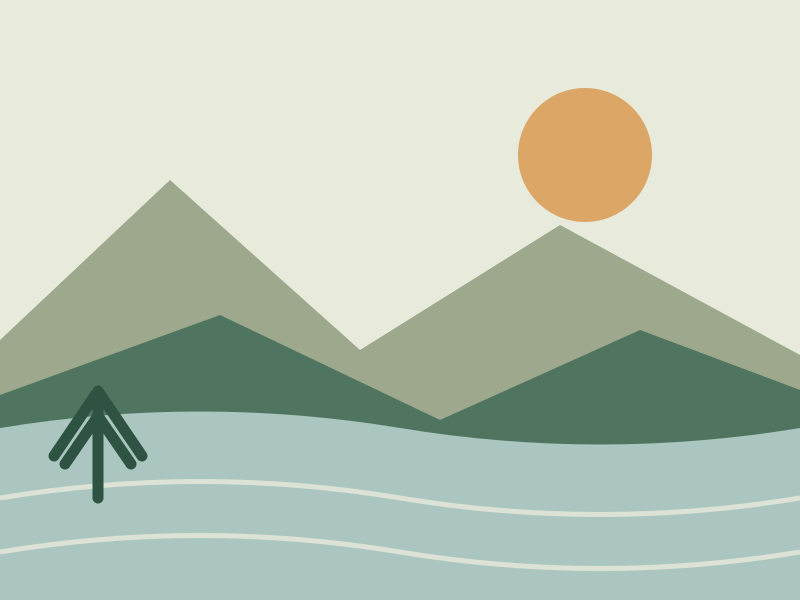
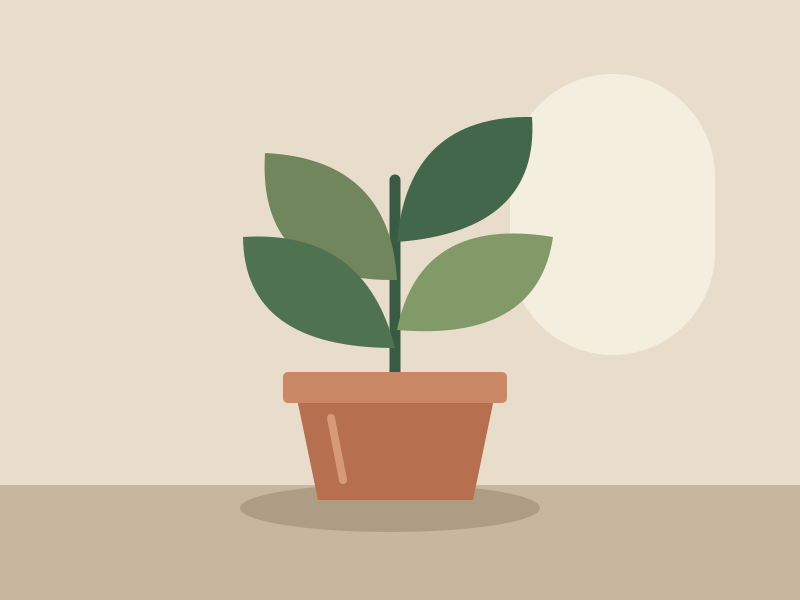
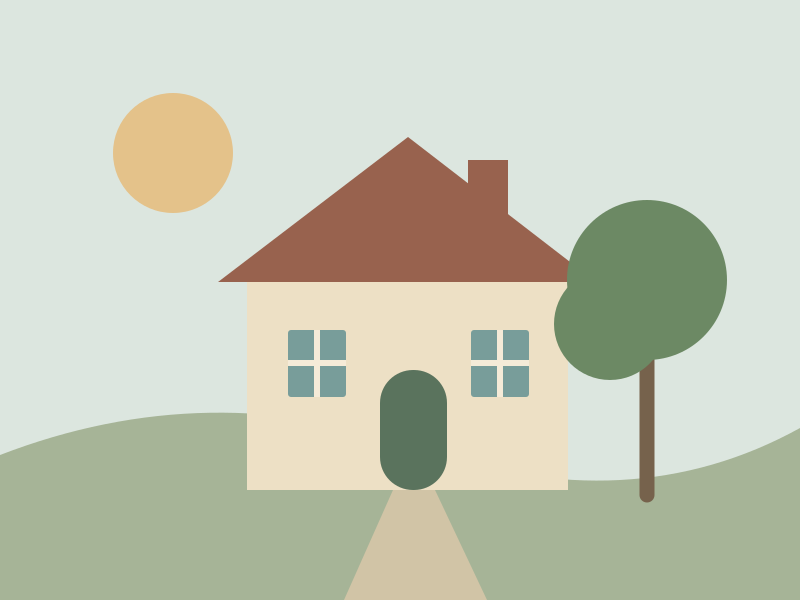

Kuvagalleria
Galleria
Ottamiani valokuvia

Järvimaisema
Vihreät kuvitettuja kukkuloita ja rauhallinen joki.

Huonekasvi
Vihreä kasvi saviruukussa.

Talo ja puu
Pieni talo ja puu sen vieressä.
Vinkki: kerro jokaisesta omasta kuvasta myös lyhyt tarina kuvatekstissä.